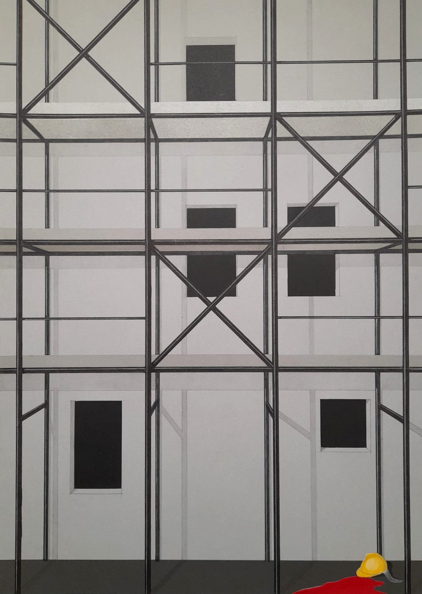
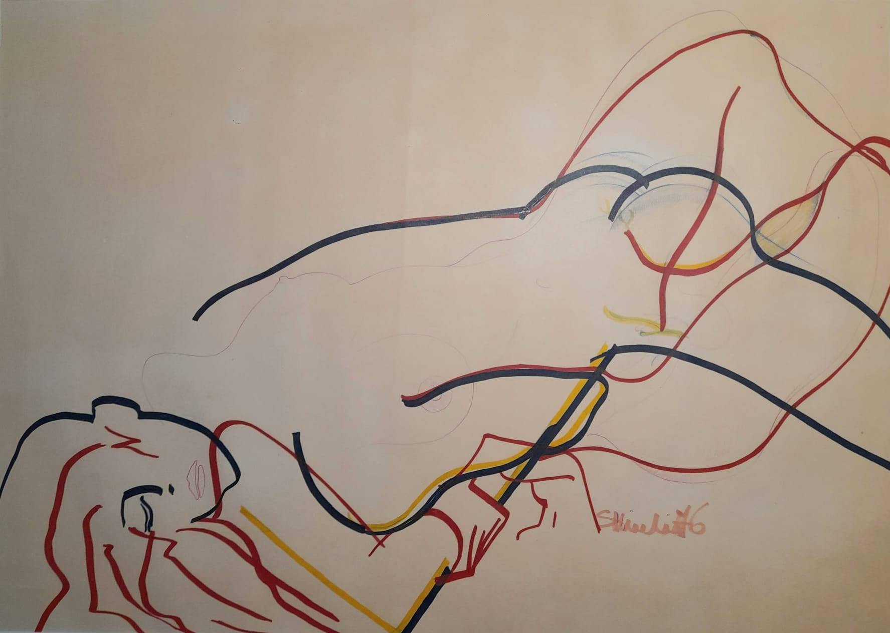
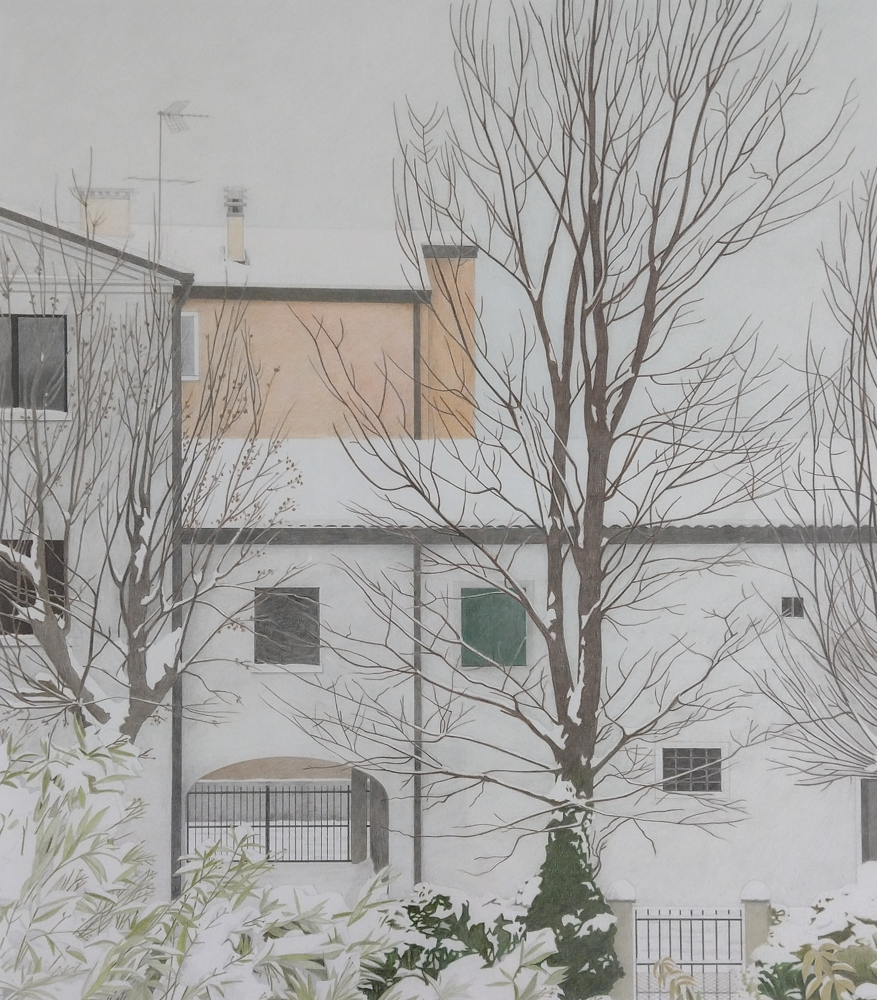
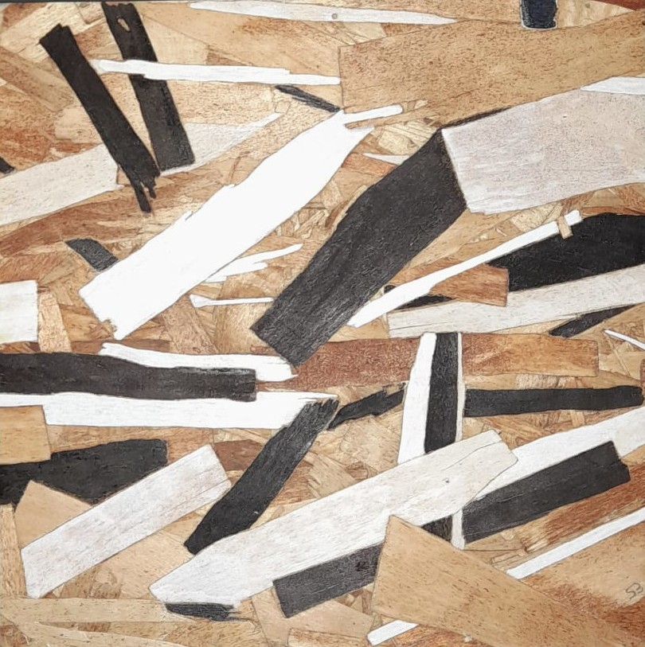
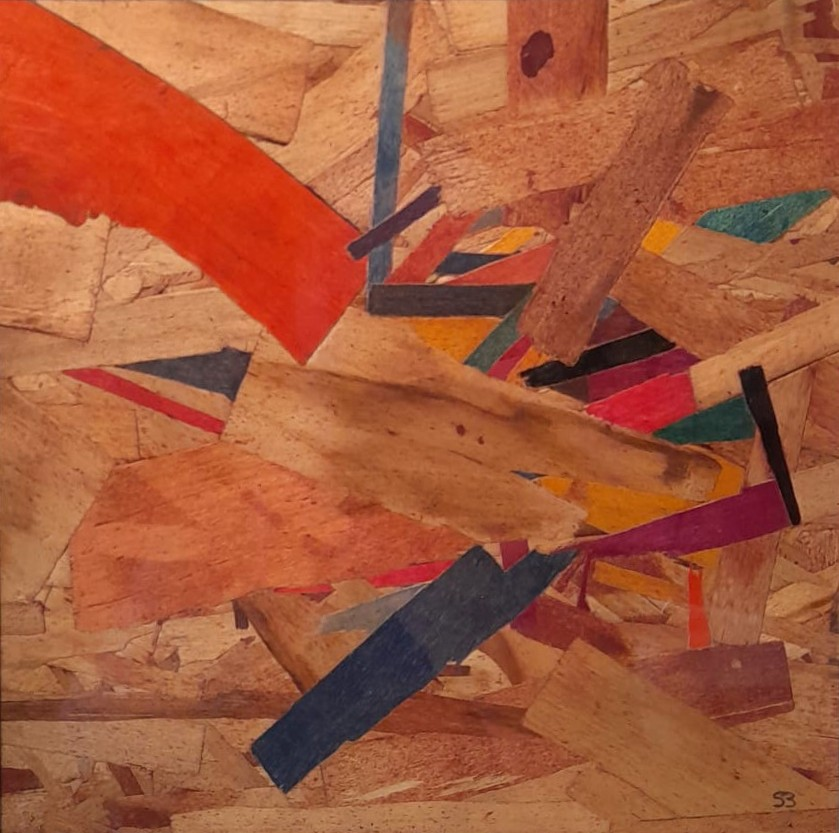
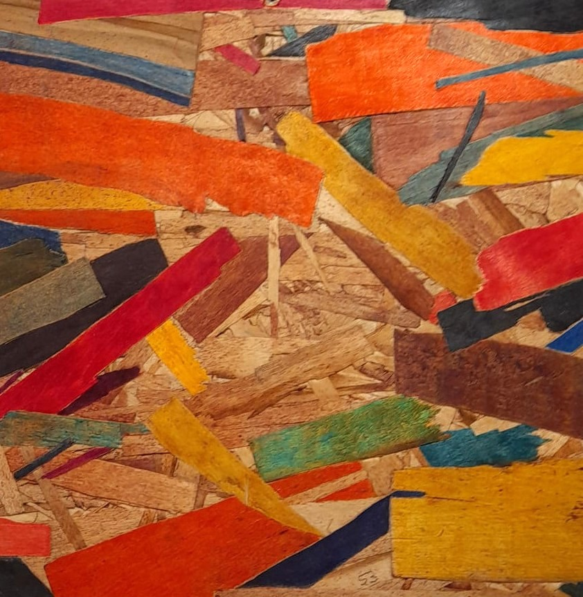
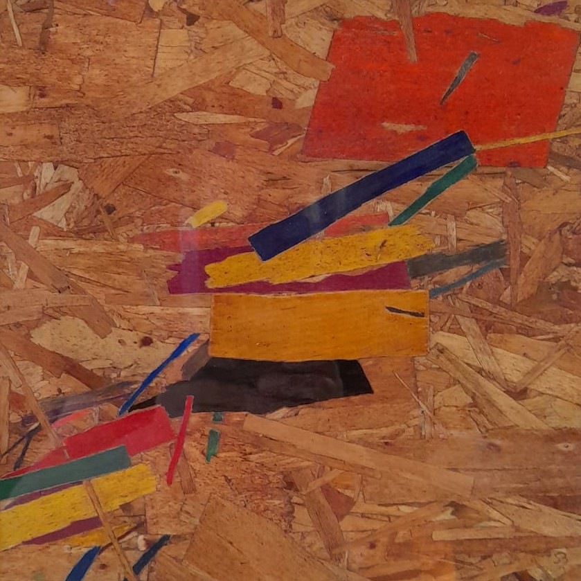
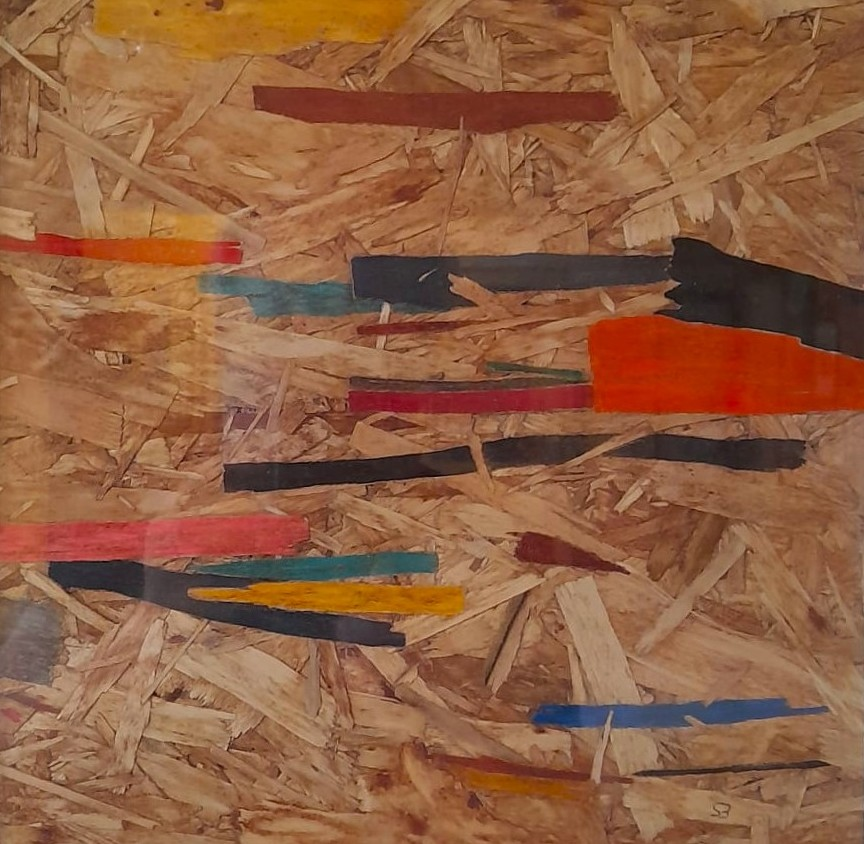
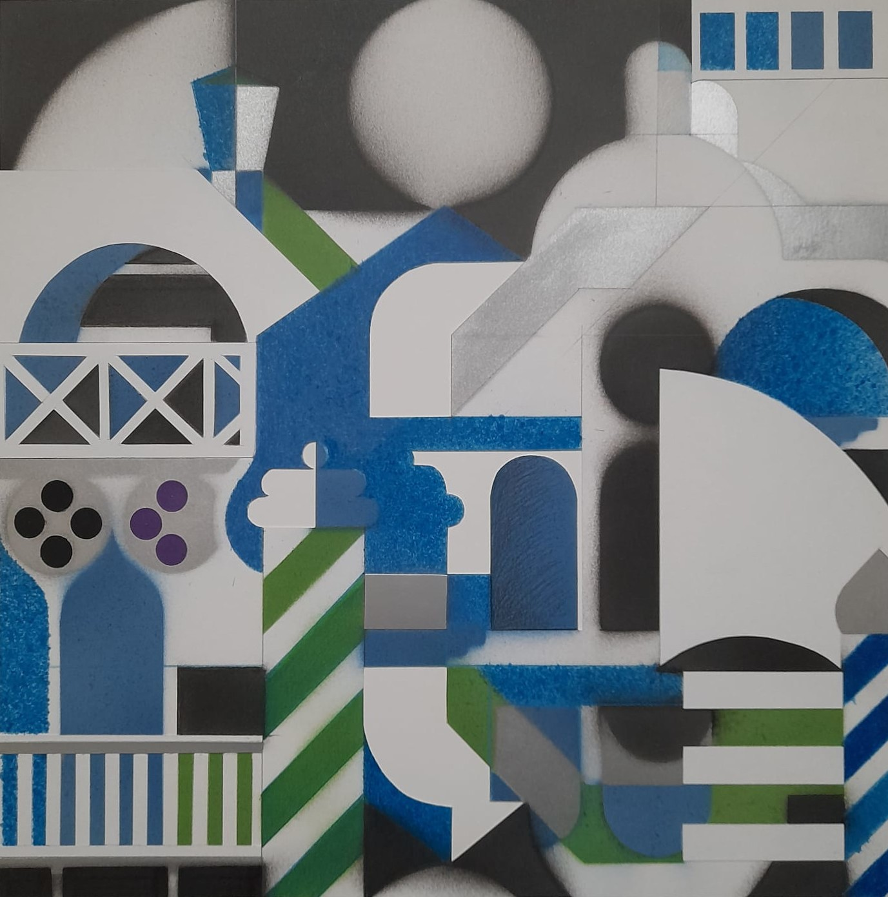

Acquerello su carta
1964
Venezia, la Salute
33 × 40 cm

Carboncino e sanguigno su carta
1965
Modella

Carboncino e sanguigno su carta
1965
Modella
41 × 65 cm

Carboncino e sanguigno su carta
1965
Modella
70 × 100 cm

Grafite e retini su carta
2023
Venezia, Punta della Dogana
A4

Grafite, retini, tarsie e pennarelli su carta
2025
Stop agli incidenti sul lavoro
A4

Pastelli e pennarelli su carta
1976
Senza titolo
47 × 67 cm

Pastelli e grafite su carta
2010
Neve da casa mia
41 × 51 cm
Pennarelli e pastelli su carta
2009
Tra Malevic e Casorati
52 × 68 cm

Pennarelli su truciolare edilizio
2024
Il Dubbio
24,5 × 24,5 cm

Pennarelli su truciolare edilizio
2024
Espansione
24,5 × 24,5 cm

Pennarelli e pastelli su truciolare edilizio
2024
Composizione Centripeta
24,5 × 24,5 cm

Pennarelli e pastelli su truciolare edilizio
2024
Ascensione Diagonale
24,5 × 24,5 cm

Pennarelli e pastelli su truciolare edilizio
2024
Sospensione
24,5 × 24,5 cm

Olio e stucco su truciolare edilizio
2025
Gaza 2025 - Stop a tutte le guerre
55 × 55 cm

Mascherine e vernice a spruzzo
2015
Geometrie Veneziane
40 × 40 cm